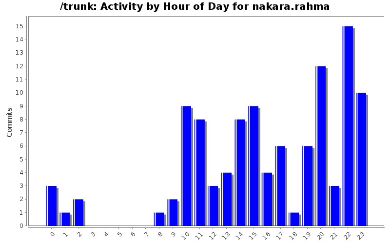
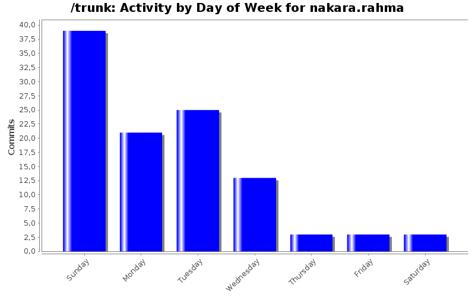
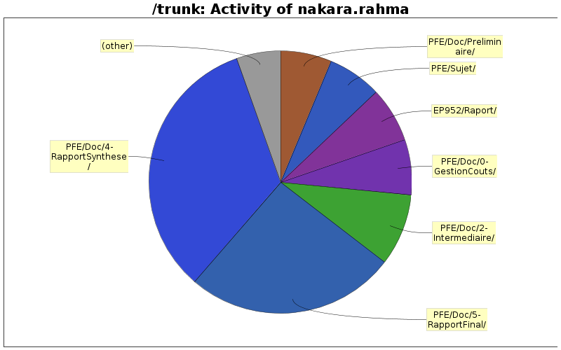

| Directory | Changes | Lines of Code | Lines per Change |
|---|---|---|---|
| Totals | 107 (100.0%) | 32444 (100.0%) | 303.2 |
| PFE/Doc/4-RapportSynthese/ | 28 (26.2%) | 10797 (33.3%) | 385.6 |
| PFE/Doc/5-RapportFinal/ | 32 (29.9%) | 8402 (25.9%) | 262.5 |
| PFE/Doc/2-Intermediaire/ | 11 (10.3%) | 2861 (8.8%) | 260.0 |
| PFE/Doc/0-GestionCouts/ | 7 (6.5%) | 2230 (6.9%) | 318.5 |
| EP952/Raport/ | 4 (3.7%) | 2184 (6.7%) | 546.0 |
| PFE/Sujet/ | 4 (3.7%) | 2177 (6.7%) | 544.2 |
| PFE/Doc/Preliminaire/ | 12 (11.2%) | 2039 (6.3%) | 169.9 |
| PFE/Doc/Intermediaire/ | 4 (3.7%) | 1556 (4.8%) | 389.0 |
| PFE/Doc/Question/ | 1 (0.9%) | 147 (0.5%) | 147.0 |
| EP952/CodeCLIPS/ | 1 (0.9%) | 51 (0.2%) | 51.0 |
| PFE/Doc/Images/ | 2 (1.9%) | 0 (0.0%) | 0.0 |
| EP952/Image/ | 1 (0.9%) | 0 (0.0%) | 0.0 |

+ correction
4016 lines of code changed in 7 files:
+ Dernieres corrections
2076 lines of code changed in 1 file:
+ corrections
9 lines of code changed in 1 file:
+ correction
1263 lines of code changed in 1 file:
+ correction orthographe
6 lines of code changed in 1 file:
+ correction orthographe
425 lines of code changed in 1 file:
+ correction de la conslusion
19 lines of code changed in 1 file:
+ correction orthographe , synthaxe, grammaire
1850 lines of code changed in 4 files:
+ j'ai mis une deuxieme version de la conclusion si quelquen veu mixer les 2 si non il fau juste la supprimer
174 lines of code changed in 1 file:
+ une sorte de conclusion pour le rapport de gestion de projet
46 lines of code changed in 1 file:
+ confusion sur la conclusion excusez moi pour les commit :p
2 lines of code changed in 1 file:
+ état de l'art normalement finis pour ceux qui veulent jeter un coup d'oeil
85 lines of code changed in 8 files:
+ conclusion sur D3 incorporé dans le tableau
1206 lines of code changed in 1 file:
+ etat de l'art pas encore corrigé
1675 lines of code changed in 9 files:
+ fichier composant l'état de l'art
2065 lines of code changed in 6 files:
+ je re commit tous car sur ma boite ya qu'un seul commit jen ai fait 4 ou son passé les autres?
0 lines of code changed in 1 file:
+ introduction de la parti contexte , il faut faire la meme chose pour toute les parti afin de guider le lecteur
489 lines of code changed in 1 file:
+ quelque modification
176 lines of code changed in 1 file:
+ quelque modification mais il manque toujour l'ennoncé du cahier de charge tel qu'il est jai mis une note dessus
23 lines of code changed in 1 file:
+ je ne suit pas arrivé a revenir à la ligne pour faire une parti sur la D3 et une parti conclusion, il faut juste arranger ça
1205 lines of code changed in 1 file:
(37 more)